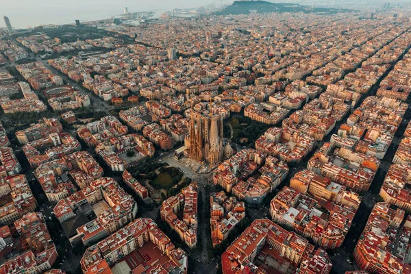

Barcelona, Espanha

Dados
- Comunidade
- Catalunha
- População
- 1,6 milhão (cidade)
- Idiomas
- Catalão e Espanhol
- Moeda
- Euro (€)
- Fuso horário
- CET (UTC+1)
Clima
Condição: Parcialmente nublado
Temperatura: 9 °C
Vento: 10 km/h
Sensação térmica: N/A

Condição: Parcialmente nublado
Temperatura: 9 °C
Vento: 10 km/h
Sensação térmica: N/A